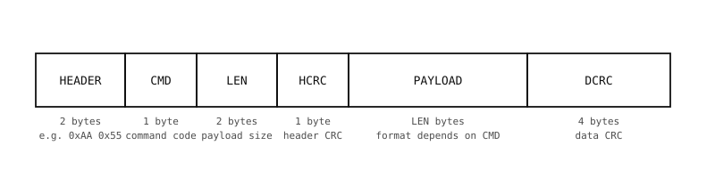

3.20. Protocoale seriale, încadrare și CRC-uri¶
UART în cod muta octeți între cele două capete. În sine, acest lucru nu este suficient pentru a construi o legătură fiabilă. Trei probleme apar în momentul în care la celălalt capăt al firului se află un dispozitiv real:
Unde începe și unde se termină un mesaj? Octeții sosesc într-un flux fără niciun delimitator încorporat. Dacă receptorul ratează primul octet (a fost pornit după emițător; o scurtă perturbație electrică pe linie), fiecare octet de după acesta este decalat cu unu până când receptorul găsește un punct proaspăt de resincronizare.
Cât de lung este fiecare mesaj? O citire de senzor de 32 de octeți și un răspuns de stare de 4 octeți arată identic la nivel de octet. Receptorul are nevoie de o modalitate de a ști câți octeți aparțin mesajului curent.
Au ajuns octeții intacți? Zgomotul poate inversa biți individuali. Fără o verificare, receptorul acționează fără ezitare pe baza unor date corupte.
Răspunsul standard la toate cele trei probleme este împachetarea datelor într-un cadru de pachet: o secvență cunoscută de octeți la început, un câmp de lungime, sarcina utilă în sine și o sumă de control la final.
3.20.1. Încadrarea pachetelor¶
Un format tipic de încadrare:

Un pachet încadrat cu CRC-uri separate pentru antet și date: antet (octeți magici), comandă, lungime, CRC de antet, sarcină utilă, CRC de date.¶
Fiecare câmp îndeplinește o singură sarcină:
Antet (octeți magici). O secvență fixă, neobișnuită de octeți – adesea doi octeți precum
0xAA 0x55– pe care receptorul o caută în fluxul de intrare. Când găsește secvența, știe că începe un pachet nou și poate arunca orice resturi care au venit înainte.Comandă. Un singur octet care spune ce este pachetul. Diferite valori de comandă folosesc formate diferite de sarcină utilă – o comandă ar putea însemna „setează unghiul servomotorului” cu doi octeți de sarcină utilă, alta ar putea însemna „citește senzorul” fără sarcină utilă, alta ar putea fi „mesaj de jurnal” cu un șir de caractere. Receptorul direcționează în funcție de octetul de comandă pentru a ști cum să interpreteze restul pachetului.
Lungime. Doi octeți care indică dimensiunea sarcinii utile în octeți (little-endian aici), permițând sarcini utile de până la aproximativ 64 KiB. Receptorul citește exact acest număr de octeți după ce CRC-ul de antet a fost verificat.
CRC de antet. O sumă de control de un octet asupra câmpurilor HEADER, CMD și LEN. Receptorul o verifică înainte de a citi orice sarcină utilă, astfel încât un LEN corupt este detectat după doar câțiva octeți (vezi secțiunea CRC de mai jos pentru a înțelege de ce contează acest lucru).
Sarcină utilă. Date de aplicație specifice comenzii, cu o lungime de exact LEN octeți. Formatul este determinat de octetul de comandă: o înregistrare împachetată cu
structdin câmpuri de lățime fixă, un șir de caractere, memorie brută – orice convin ambele părți pentru comanda respectivă.CRC de date. Un CRC de patru octeți asupra octeților sarcinii utile. Receptorul îl recalculează din octeții pe care tocmai i-a citit și renunță la pachet dacă nu se potrivește.
3.20.2. CRC-uri¶
Cea mai simplă „sumă de control” este suma tuturor octeților, modulo 256 sau 65536. Detectează majoritatea inversărilor de un singur bit, dar ratează multe erori pe mai mulți biți și ignoră ordinea octeților.
O verificare ciclică prin redundanță (CRC) este îmbunătățirea standard. Tratează intrarea ca pe un singur număr binar lung și îl împarte (într-un mod special) la un polinom fix; restul împărțirii este CRC-ul. Polinoame diferite detectează clase diferite de erori; polinoamele comune de 8, 16 și 32 de biți detectează fiecare orice rafală de erori mai scurtă decât lățimea lor, plus o mare parte din rafalele mai lungi.
3.20.2.1. De ce două CRC-uri¶
Diagrama de pachet de mai sus transportă două CRC-uri separate – unul asupra antetului (HEADER, CMD, LEN) și unul asupra sarcinii utile. Acesta este lucrul de care o încadrare robustă are de fapt nevoie, din cauza modului în care un singur CRC final eșuează atunci când câmpul LEN însuși este corupt în tranzit:
Receptorul acționează pe baza LEN-ului corupt și citește acel număr de octeți de pe fir – posibil mult mai mulți decât a intenționat emițătorul.
Abia CRC-ul final îi spune în cele din urmă receptorului că ceva nu a mers bine, și numai după ce toți acei octeți au fost consumați.
Cât timp analizatorul este blocat în așteptarea numărului greșit de octeți, pachetele reale care sosesc în spatele celui corupt sunt înghițite ca sarcină utilă, iar receptorul pierde mai multe pachete în loc de unul singur.
Împărțirea CRC-ului rezolvă acest lucru:
CRC-ul de antet acoperă HEADER, CMD și LEN. Receptorul îl verifică înainte de a citi orice sarcină utilă, astfel încât un LEN corupt este detectat după câțiva octeți, iar analizatorul se resincronizează imediat, sacrificând doar singurul pachet defect.
CRC-ul de date acoperă sarcina utilă. Odată ce CRC-ul de antet a trecut, receptorul știe că poate avea încredere în LEN, citește exact acel număr de octeți de sarcină utilă și îi verifică în raport cu CRC-ul de date.
O dimensionare obișnuită – și cea folosită de această pagină – este de un octet pentru CRC-ul de antet (un CRC-8 este mai mult decât suficient pentru un antet de cinci octeți) și patru octeți pentru CRC-ul de date (un CRC-32 acoperă mulți kiloocteți de sarcină utilă cu o rată de coliziune extrem de scăzută).
3.20.2.2. Funcții ajutătoare¶
MicroPython include binascii.crc32() direct pentru CRC-ul de patru octeți. Pentru CRC-ul de antet de un octet, o mică funcție ajutătoare care folosește polinomul utilizat de dispozitivele 1-wire de la Maxim (0x8C în formă reflectată) este suficient de scurtă pentru a fi scrisă inline:
def crc8(data: bytes) -> int:
crc = 0
for byte in data:
crc ^= byte
for _ in range(8):
crc = (crc >> 1) ^ 0x8C if crc & 1 else crc >> 1
return crc & 0xFF
Un codificator complet combină cele două CRC-uri într-o singură funcție:
import binascii
import struct
def encode_packet(cmd: int, payload: bytes) -> bytes:
header = b"\xAA\x55" + bytes([cmd]) + struct.pack("<H", len(payload))
hcrc = crc8(header)
dcrc = binascii.crc32(payload)
return header + bytes([hcrc]) + payload + struct.pack("<I", dcrc)
Funcția inversă recuperează comanda și sarcina utilă dintr-un pachet complet sau returnează None dacă oricare dintre verificările CRC eșuează:
def decode_packet(packet: bytes):
# Layout: HEADER(2) + CMD(1) + LEN(2) + HCRC(1) + PAYLOAD(LEN) + DCRC(4)
if len(packet) < 10 or packet[0:2] != b"\xAA\x55":
return None
header = packet[0:5]
if crc8(header) != packet[5]:
return None # header CRC mismatch
cmd = packet[2]
length = struct.unpack("<H", packet[3:5])[0]
if len(packet) != 6 + length + 4:
return None # truncated or oversized
payload = packet[6:6 + length]
received_dcrc = struct.unpack("<I", packet[6 + length:])[0]
if binascii.crc32(payload) != received_dcrc:
return None # data CRC mismatch
return cmd, bytes(payload)
În practică, receptorul nu primește un pachet întreg gata făcut – octeții sosesc unul câte unul prin UART, iar un emițător care face o pauză la jumătatea pachetului (sau o linie zgomotoasă care pierde un octet) nu poate fi pur și simplu citit cu read() într-un tampon de dimensiunea potrivită. Secțiunea următoare rulează aceeași logică de decodare octet cu octet, ca o mașină de stări.
3.20.3. Un receptor de tip mașină de stări¶
Receptorul nu poate apela pur și simplu uart.read(N) pentru un N fix – nu știe câți octeți va avea următorul pachet, iar orice reziduuri de pe linie strică alinierea. Soluția este o mică mașină de stări care consumă octeții unul câte unul și reacționează în funcție de poziția sa în pachet. Bucla principală interoghează any() pentru a vedea câți octeți sunt în tampon, îi golește într-un singur apel read() și transmite fiecare octet prin mașina de stări:
import time
import binascii
import struct
from machine import UART
HEADER = b"\xAA\x55"
HEADER_LEN = len(HEADER)
# States, in the order the receiver walks through them per packet.
HUNT_FOR_HEADER = 0
READ_COMMAND = 1
READ_LENGTH = 2
READ_HEADER_CRC = 3
READ_PAYLOAD = 4
READ_DATA_CRC = 5
uart = UART(3, baudrate=115200)
# Receiver state plus partial-field buffers.
state = HUNT_FOR_HEADER
matched = 0 # bytes of HEADER matched so far
cmd = 0 # CMD captured in READ_COMMAND
length_bytes = bytearray() # raw LEN bytes (kept for the header CRC)
length = 0 # unpacked LEN
payload = bytearray() # payload bytes accumulated in READ_PAYLOAD
crc_bytes = bytearray() # DCRC bytes accumulated in READ_DATA_CRC
def handle_packet(cmd: int, payload: bytes) -> None:
print("cmd", cmd, "payload", payload)
while True:
# Drain whatever bytes have arrived since the last poll. Idle
# briefly when the line is quiet so the loop is not a busy spin.
n = uart.any()
if not n:
time.sleep_ms(1)
continue
for b in uart.read(n):
if state == HUNT_FOR_HEADER:
# Walk the magic bytes. On a mismatch, back off by one
# so a stray HEADER[0] in the noise still counts as a
# possible start.
if b == HEADER[matched]:
matched += 1
if matched == HEADER_LEN:
state = READ_COMMAND
matched = 0
else:
matched = 1 if b == HEADER[0] else 0
elif state == READ_COMMAND:
cmd = b
length_bytes = bytearray()
state = READ_LENGTH
elif state == READ_LENGTH:
# LEN is two bytes little-endian.
length_bytes.append(b)
if len(length_bytes) == 2:
length = struct.unpack("<H", length_bytes)[0]
state = READ_HEADER_CRC
elif state == READ_HEADER_CRC:
# Verify the CRC over HEADER + CMD + LEN before
# committing to read LEN payload bytes. A mismatch
# aborts here, after just five header bytes -- the
# next valid header re-syncs quickly.
expected = crc8(HEADER + bytes([cmd]) + length_bytes)
if b == expected:
payload = bytearray()
state = READ_PAYLOAD
else:
state = HUNT_FOR_HEADER
elif state == READ_PAYLOAD:
payload.append(b)
if len(payload) == length:
crc_bytes = bytearray()
state = READ_DATA_CRC
elif state == READ_DATA_CRC:
# Verify the CRC over the payload and either deliver
# the packet or drop it. Either way, go back to
# looking for the next header.
crc_bytes.append(b)
if len(crc_bytes) == 4:
expected = binascii.crc32(payload)
received = struct.unpack("<I", crc_bytes)[0]
if expected == received:
handle_packet(cmd, bytes(payload))
state = HUNT_FOR_HEADER
Fiecare octet avansează mașina de stări cu un pas sau revine la HUNT_FOR_HEADER după un pachet complet, un CRC de antet greșit sau un CRC de date greșit. Reziduurile de pe linie care nu se potrivesc cu antetul sunt eliminate în tăcere; următorul antet valid resincronizează receptorul. Proprietatea-cheie de siguranță provine din CRC-ul de antet: dacă câmpul LEN este corupt, analizatorul îl detectează după verificarea CRC-ului de antet (câțiva octeți), nu după ce s-a angajat să citească un număr complet eronat de octeți de sarcină utilă.
3.20.4. Dincolo de nivelul de bază¶
Încadrarea de mai sus este minimul de care o legătură serială are nevoie pentru a se recupera din zgomotul de pe linie: octeți magici de antet, lungime, comandă și două CRC-uri. Detectează corupția și se resincronizează după octeți deteriorați, dar renunță la pachetele afectate în loc să le transmită cu succes și lasă emițătorul fără nicio idee despre ce a auzit de fapt receptorul.
Protocoalele seriale din lumea reală adaugă funcționalități peste acest nivel de bază. Nu fiecare legătură încorporată are nevoie de toate – alegeți ceea ce solicită de fapt aplicația:
Numere de secvență. Un mic contor care se incrementează la fiecare trimitere. Receptorul detectează lacunele (un pachet a fost pierdut), duplicatele (emițătorul a retransmis, dar receptorul acceptase deja prima copie) și – acolo unde canalul poate reordona – sosirile în afara ordinii.
Confirmări. Un pachet ACK dedicat (sau un bit atașat într-un răspuns) pe care receptorul îl trimite înapoi pentru a confirma fiecare pachet. Fără ACK-uri, emițătorul nu are nicio modalitate de a ști dacă datele sale au ajuns.
Confirmări negative. Un NACK trimis atunci când receptorul observă un eșec CRC sau o lacună de secvență. Emițătorul retransmite imediat, în loc să aștepte expirarea unui timeout de ACK.
Retransmisie. Emițătorul păstrează fiecare pachet neconfirmat într-o mică coadă și îl retrimite după un timeout (sau la primirea unui NACK). O limită de reîncercări și o anumită temporizare progresivă (backoff) între reîncercări împiedică o legătură definitiv defectă să se blocheze într-o buclă infinită.
Ferestre glisante. Permiterea mai multor pachete în tranzit înainte de a solicita un ACK menține debitul ridicat pe legăturile unde durata dus-întors este lungă în comparație cu timpul de trimitere per pachet. Costul este o stare mai mare pe partea emițătorului – câte un slot pentru fiecare pachet în tranzit.
Controlul fluxului. Un semnal de la receptor care îi spune emițătorului să încetinească sau să facă o pauză atunci când tamponul său se umple. Implementările variază – octeți expliciți XON / XOFF, acordări pe bază de credite în care receptorul autorizează N pachete suplimentare odată, sau liniile hardware RTS / CTS de pe firul propriu-zis. Fără controlul fluxului, un emițător rapid depășește în cele din urmă un receptor lent, iar pachetele sunt pierdute.
Versiune de protocol. Un câmp de versiune plasat devreme în pachet permite formatului să evolueze. Fiecare parte poate negocia la pornire cea mai înaltă versiune pe care ambele o suportă sau poate respinge pachetele de la parteneri incompatibili.
Fragmentare și reasamblare. Un LEN de doi octeți limitează pachetul la 64 KiB; mesajele mai mari de atât sunt împărțite în mai multe pachete și reasamblate pe cealaltă parte. Metadatele de fragmentare (indicele fragmentului, numărul total sau un indicator „mai multe fragmente”) se află în interiorul sarcinii utile.
Bătăi de inimă. Un mic pachet periodic care spune „sunt încă aici”. Cealaltă parte observă când bătăile de inimă se opresc și se reconectează (sau eșuează în mod evident) în loc să rămână blocată în tăcere.
Canale. Un ID de canal sau de flux în antet, astfel încât o singură legătură fizică să transporte mai multe fluxuri logice – un canal de control, un canal de telemetrie, un canal de jurnal – distinse doar prin acel câmp.
Autentificare. O etichetă scurtă calculată din sarcina utilă și o valoare secretă pe care o cunosc doar emițătorul și receptorul legitimi. Receptorul calculează din nou eticheta din octeții pe care i-a primit și respinge pachetul dacă cele două nu se potrivesc. Acest lucru detectează atât falsificarea (un atacator a modificat octeții), cât și – dacă un număr de secvență sau o marcă temporală face parte din ceea ce acoperă eticheta – atacurile de tip replay, în care un atacator înregistrează un pachet real de pe fir și îl retrimite ulterior pentru a face receptorul să acționeze pe baza lui de două ori.
Criptare. Amestecarea octeților sarcinii utile cu o cheie secretă partajată, astfel încât oricine citește linia fără acea cheie să vadă doar zgomot. De obicei combinată cu eticheta de autentificare de mai sus – fără ea, un atacator poate introduce resturi care întâmplător trec de CRC, iar receptorul irosește cicluri încercând să decripteze date fără sens.
Un protocol „bun” tipic pentru echipamente industriale ajunge să aibă încadrare, CRC dublu, numere de secvență, ACK / NACK cu retransmitere și bătăi de inimă. Exemple din lumea reală care merită analizate: MAVLink (telemetrie pentru drone, cu numere de secvență, ID-uri de sistem / componentă și semnături opționale de pachet), Modbus (PLC-uri industriale, cu coduri de funcție și CRC) și NMEA 0183 (protocolul ASCII pe care îl vorbește orice receptor GPS de consum – mesaje pe bază de linii cu o sumă de control după un delimitator de tip asterisc).